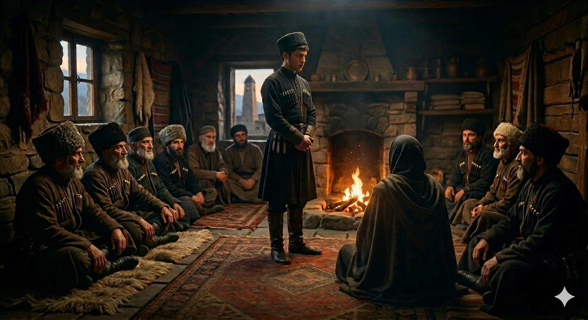

И.А. Дахкильгов. Хьехаме дувцарш - поучительные рассказы-притчи.
И.А. Дахкильгов. Хьехаме дувцарш - поучительные рассказы-притчи. Из ингушского фольклора.

Са дешал ч1оаг1аг1 да цун эздел
Гулбенна нах баг1ача ц1аг1а Мохьмад-пайхамар чуваьлча, берригаш г1айттаб. Пайхамара 1оха а аьнна, уж 1охайшача, цхьа з1амига саг латтийсав. Пайхамара шозлаг1а а аннад цунга, 1оха. Т1аккха а хайнавац. Пайхамара яхар х1ана дац 1а, 1оха ях хьога, оалаш, бехкаш даха нах болабелча, Мохьмад-пайхамара аьннад: - Бехкаш ма даха цох. Са дешал ч1оаг1аг1а да цун сих доалла эздел.
РУССКИЙ
Его благородство сильнее моих слов
В одном доме собрались люди. Они сидели и беседовали. В это время вошел пророк Мухаммед. Все встали, приветствуя его. Пророк попросил их сесть, и тогда все сели. Один юноша продолжал стоять. Пророк повторно предложил ему сесть. Юноша продолжал стоять. На него зашикали: "Садись, тебе говорят. Для тебя слово пророка ничто не значит?". Тогда Мухаммед-пророк сказал: "Не обижайте юношу. Благородство, впитавшееся в его душу, сильнее моих слов".
ENGLISH
His nobility speaks louder than my words
A group of people had gathered in a house. They were sitting and chatting. At that moment, the Prophet Muhammad entered. Everyone stood up to greet him. The Prophet asked them to sit down, and they all sat down. One young man remained standing. The Prophet asked him again to sit down. The young man remained standing. They hissed at him: "Sit down, we’re telling you. Does the Prophet’s word mean nothing to you?" Then the Prophet Muhammad said: - Do not offend the young man. The nobility ingrained in his soul is stronger than my words.
НОХЧИЙН
Сан дашал ч1ог1ах йу цуьнан оьздангалла
Гулбелла нах бохкучу ц1ен чохь Мохьмад-пайхмар (с.а.с.) чуваьлча, массо а г1еттина. Пайхамаро охьаховша а аьлла, уьш охьахевшича, цхьа жима стаг лаьтташ висна. Пайхамаро шозлаг1а а аьлла цуьнга, охьахаа. Т1аккха а хиъна вац. Пайхамаро бохург х1унда дац ахьа, охьахаа боху хьоьга, олуш, бехкаш даха нах болабелча, Мохьмад-пайхамаро (с.а.с.) аьлла: - Бехкаш ма даха цунах. Сан дашал ч1ог1ах йу цуьнан сих йоллу оьздангалла.
ЛЕКСИКА
эздел дешал ч1ог1аг1 ц1аг1а 1оха (1оховша) Латтийсав (латта висав) хайнавац бехкаш даха сих
ПОГОВОРКИ
Эзде вар-воацар белгалла хул – Благородного от неблагородного легко отличить. Эздел леладечунца мара дац – Благородство лишь у того, кто ведет себя благородно. Сих лета эздел – бохоргбоаца лоаман берд - Внутреннее (не показное) благородство крепче скалистого берега.
ГРАММАТИКА
Алфавит и произношение
Всего 46 букв. 13 букв, которых нет в русском : гласные аь, яь; согласные г1, кх, къ, к1, п1, т1, хь, х1, ц1, ч1, 1; Буква Ӏ (кирилл. палочка) - на практике ее заменяют латинской I или цифрой 1. Другой вариант – использовать шрифт Gill Sans, в котором 1 похожа на I (1 - I). Отсутствуют гласные оь, уь, юь, которые есть в чеченском; Часто встречается дифтонг оа, которого нет в чеченском: к1оаг – к1аг, лоам – лам. Буква Ф – встречается чаще, чем в чеченском: фу (что), фусам (жилье), фийг (зернышко), фоарт (затылок) Буква Х1 встречается реже, чем в чеченском : уотта – х1отта, йара – х1ара, фуъ – х1оа Буква И часто произносится как Ы : из – "ыз", ц1илеторг – "ц1ылеторг" Звук Е практически отсутствует, там, где есть буква Е, она произносится : или как краткое э – эзар, дей (легкий); или как дифтонг иэ – безам, де (делай), берх1а (соус). (как "е" в слове белый). Ср. инг. "Даьла раьза хилда" и чеч. "Дела реза хуьлда" Лг, рг, шк, кк, г, к на конце слов произносятся мягко, как льгь, рьгь, шькь, ськь, ккь (кулг, лерг, пешк, циск, икк, гииг) Буквы "ж" и "з" обычно произносятся как "дж" и "дз" – модж, хьадж, модз, гердз. Буквы "с","ш","х" в приставках на конце обычно произносится звонко, как "з","ж","г1"